We present how divergence-free solutions of the model problem (1) on a domain
 with perfectly
conducting boundary
can be constructed from solutions of the scalar Laplace equation.
with perfectly
conducting boundary
can be constructed from solutions of the scalar Laplace equation.
PROPOSITION 9
Let

be a sufficiently smooth domain in
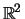,

a sufficently smooth scalar function on
and the coefficient 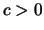
globally constant.
Let

be a solution of the scalar equation
 |
(34) |
Then,

is a solution of the model equation
with right hand side

.
We use the notation

.
PROOF.
We first show the correspondence of the boundary conditions. With the definition
it holds
It remains to show that
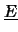 solves the model problem for an appropriate right hand side.
First, note that
is divergence-free:
 for all . Hence, the identity
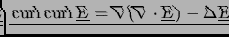
reduces to
for all . Hence, the identity
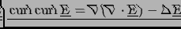
reduces to
 . The observation that for smooth data
. The observation that for smooth data
 solves the Laplace equation
(34) with right hand side
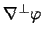 concludes the proof.
solves the Laplace equation
(34) with right hand side
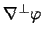 concludes the proof.
EXAMPLE 5 (Solutions from eigenfunctions of the Laplacian)
Choose
to be a solution of the eigenvalue problem
and set

.
As an example, take
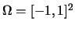 and
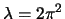. Then,
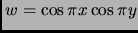 is an eigenfunction and we compute
EXAMPLE 6 (Solutions from any scalar function satiesfying the boundary condition)
Take again
. We have to find a scalar function
which satiesfies the homogeneous Neumann boundary condition. Take
for example

, for which we have
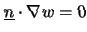 on
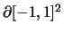. The right hand side is then
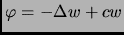.
2003-04-30